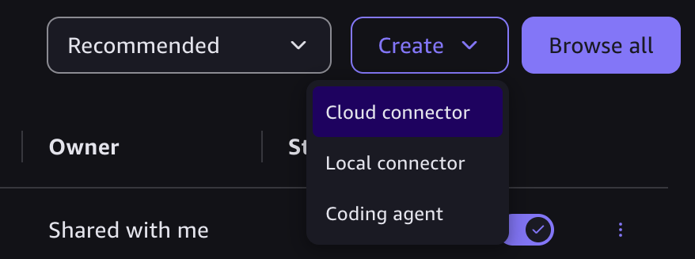
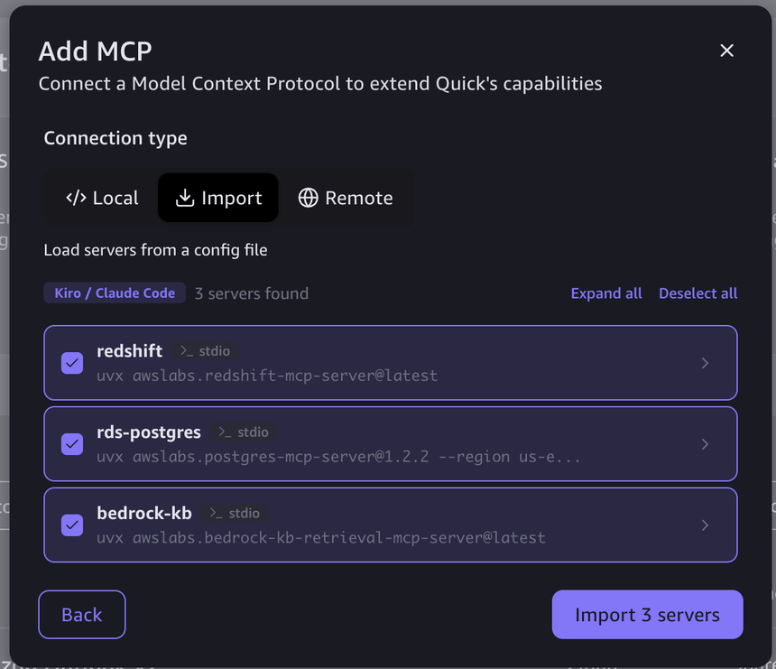
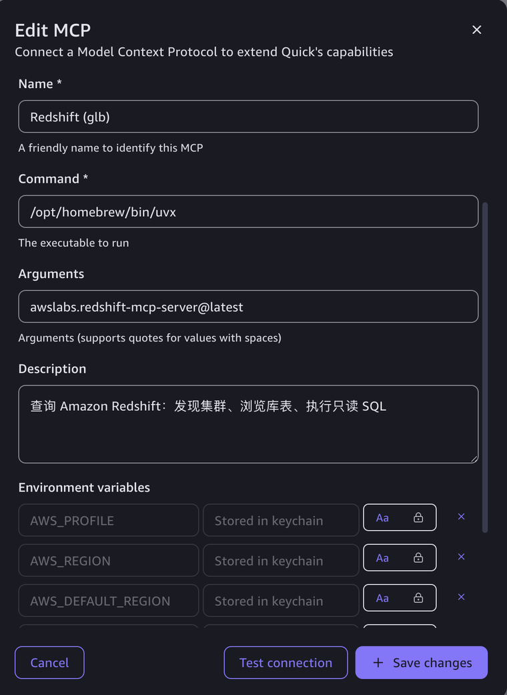
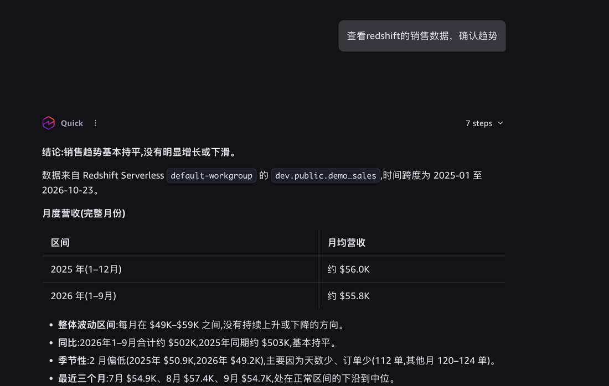
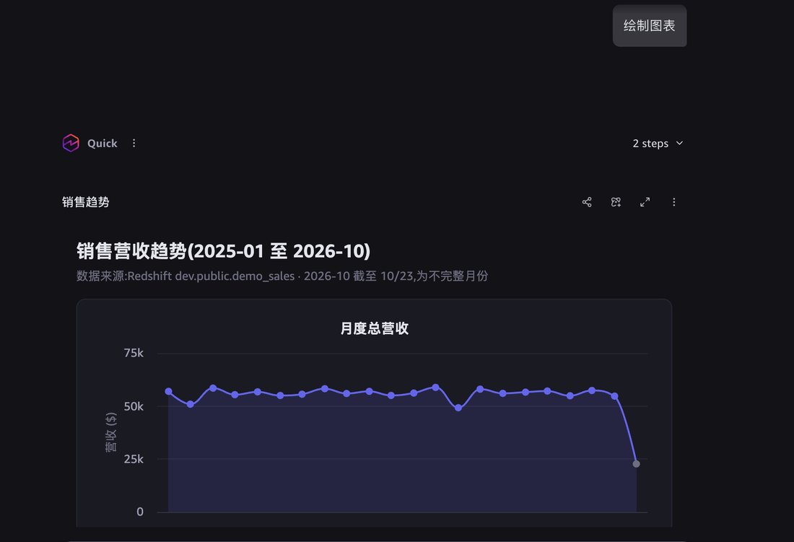

Quick 快速配置 Local MCP
在 Quick Desktop 用 Local 连接器直接在本机运行 awslabs 的 MCP，几分钟配好。适合个人、小团队和快速验证。从提问到出图，不写一行 SQL。
为了完成本 module，需要您准备以下信息，用于下面创建 3 个 Local 连接器并对话查询：
- 已安装并登录 Quick Desktop 桌面端，用于创建连接器与提问
- 本机已装
uv/uvx（记下uvx绝对路径）与 AWS CLI，用于本机运行 MCP - 一个 AWS
profile（默认用default；生产环境建议单独建只读 profile，勿用管理员），用于 MCP 访问 AWS - 管理员在模块 2 交付的数据源值（区域、RDS 只读密钥 ARN、RDS 端点、库名、知识库 ID 与区域），用于填写下面的连接器字段
- 笔记本网络能直达目标数据库（RDS 5432），用于 Local 直连
在连接器创建并测试通过后，您预期看到：
- Quick Desktop 里 3 个 Local 连接器（Redshift、RDS PostgreSQL、Bedrock KB）Test connection 通过、状态正常
- 用自然语言查到 Redshift 月度营收并画出折线图（格式类似步骤 4、5 的截图）
- Agent 能列出 RDS 的
demo_products、demo_sales表，并在知识库里检索给出处
配置中用到的只读密钥 ARN、profile 等信息请谨慎保存，勿与第三方分享。
准备本机依赖与管理员交付的值
Local 方式需要本机准备下列依赖。可以交给 Kiro 逐项检查，缺什么装什么。下表给出 macOS 与 Windows 两套安装命令（Windows 的 winget 随 Win10/11 自带；也可用 PowerShell 一键脚本）。
| 依赖 | 检查命令 | 安装（macOS） | 安装（Windows） | 必需 |
|---|---|---|---|---|
uv（含 uvx） | uvx --version | brew install uv | winget install astral-sh.uv（或 powershell -c "irm https://astral.sh/uv/install.ps1 | iex"） | 是 |
| uvx 的绝对路径 | macOS：which uvxWindows： where uvx | Homebrew 一般为 /opt/homebrew/bin/uvx | 一般为 %USERPROFILE%\.local\bin\uvx.exe | 是 |
| Python 3.10+ | uv python list --only-installed | uv 按需自动下载 | uv 按需自动下载 | 自动 |
| AWS CLI | aws --version | brew install awscli | winget install Amazon.AWSCLI | 推荐 |
| AWS profile | aws sts get-caller-identity --profile default | aws configure --profile default（两平台相同） | 是 | |
| Quick Desktop 桌面端 | — | 手动安装（两平台均有客户端） | 是 | |
管理员交付的值（直接替换下面字段里的占位符）
下面这些值由管理员在模块 2 搭建时产生。业务用户拿到后，直接把它们填进后面三个连接器的字段里，无需在本机查询或跑命令。
| 用在哪 | 值 | 样子 |
|---|---|---|
| Redshift / RDS 区域 | AWS_REGION | us-east-1 |
| AWS profile 名 | AWS_PROFILE | default |
| RDS 只读密钥 ARN | --secret_arn | arn:aws:secretsmanager:us-east-1:123456789012:secret:quick-mcp-demo/pg-readonly-a1B2c3 |
| RDS 端点 | 连接提示词里的 db_endpoint | quick-mcp-demo-pg.cabc123.us-east-1.rds.amazonaws.com |
| RDS 库名 | 连接提示词里的 database | demo |
| 知识库所在区域 | KB 连接器的 AWS_REGION | us-west-2（按实际） |
| 知识库 ID | 检索提示词里引用 | ABCDE12345 |
AWS profile 需要的 IAM 权限
MCP server 以本机 AWS_PROFILE 的权限访问 AWS（CLI/SDK 用的是同一套凭证）。给这个 profile 的最小权限按数据源列在下表——只给要连的那几个即可。用 default / 管理员 profile 能直接跑通，但生产环境请按下表收敛为只读。
| 数据源 / server | Action | Resource |
|---|---|---|
Redshiftredshift-mcp-server |
redshift:DescribeClusters、redshift-serverless:ListWorkgroups（发现） | * |
redshift-serverless:GetCredentials（取临时凭证） | 工作组 ARN | |
redshift-data:ExecuteStatement、BatchExecuteStatement（跑 SQL） | 工作组 ARN | |
redshift-data:DescribeStatement、GetStatementResult（取结果） | * | |
RDS PostgreSQLpostgres-mcp-server |
secretsmanager:GetSecretValue、DescribeSecret（读只读库口令） | <NAME>/pg-readonly-* 密钥 ARN |
rds:DescribeDBInstances（查端点等元数据） | db:* 或具体实例 ARN | |
Bedrock 知识库bedrock-kb-retrieval-mcp-server |
bedrock:Retrieve（检索） | 该知识库 ARN knowledge-base/<KB_ID> |
ℹ️ 说明
- 这些正是模块 2 给对应 Lambda 角色授的权限，本地 profile 用同一组即可。
- RDS Local 走 pgwire 直连、口令来自
pg-readonly密钥，所以不需要rds-db:connect；只要能读密钥和查实例端点。真正的只读边界由数据库角色mcp_readonly把守。 bedrock:Retrieve够用；若还想让 Agent 列知识库（ListKnowledgeBases），再加bedrock:ListKnowledgeBases（可选）。- 还需能用
sts:GetCallerIdentity自检身份（几乎所有 profile 默认可用）。
示例 IAM 策略（三类数据源合一，最小权限）
把下面的 JSON 作为 inline policy 挂到 AWS_PROFILE 对应的 IAM 用户/角色上，替换占位符 <ACCT>（账号 ID）、<WG_ID>（Redshift 工作组 ID）、<KB_ID>（知识库 ID），区域按实际改。只连其中一两个数据源时，删掉用不到的 Statement 即可。
{
"Version": "2012-10-17",
"Statement": [
{
"Sid": "SelfIdentity",
"Effect": "Allow",
"Action": "sts:GetCallerIdentity",
"Resource": "*"
},
{
"Sid": "RedshiftDiscovery",
"Effect": "Allow",
"Action": ["redshift:DescribeClusters", "redshift-serverless:ListWorkgroups"],
"Resource": "*"
},
{
"Sid": "RedshiftServerlessCreds",
"Effect": "Allow",
"Action": "redshift-serverless:GetCredentials",
"Resource": "arn:aws:redshift-serverless:us-east-1:<ACCT>:workgroup/<WG_ID>"
},
{
"Sid": "RedshiftDataRun",
"Effect": "Allow",
"Action": ["redshift-data:ExecuteStatement", "redshift-data:BatchExecuteStatement"],
"Resource": "arn:aws:redshift-serverless:us-east-1:<ACCT>:workgroup/<WG_ID>"
},
{
"Sid": "RedshiftDataRead",
"Effect": "Allow",
"Action": ["redshift-data:DescribeStatement", "redshift-data:GetStatementResult"],
"Resource": "*"
},
{
"Sid": "RdsReadOnlySecret",
"Effect": "Allow",
"Action": ["secretsmanager:GetSecretValue", "secretsmanager:DescribeSecret"],
"Resource": "arn:aws:secretsmanager:us-east-1:<ACCT>:secret:quick-mcp-demo/pg-readonly-*"
},
{
"Sid": "RdsDescribe",
"Effect": "Allow",
"Action": "rds:DescribeDBInstances",
"Resource": "arn:aws:rds:us-east-1:<ACCT>:db:*"
},
{
"Sid": "BedrockKbRetrieve",
"Effect": "Allow",
"Action": "bedrock:Retrieve",
"Resource": "arn:aws:bedrock:us-east-1:<ACCT>:knowledge-base/<KB_ID>"
}
]
}下载 mcp-readonly-policy.json。知识库若在别的区域（如 us-west-2），把 BedrockKbRetrieve 的 ARN 区域改成对应区域。
⚠️ 三个通用要点
- Command 用绝对路径（macOS 如
/opt/homebrew/bin/uvx；Windows 如C:\Users\<you>\.local\bin\uvx.exe）：图形界面应用不继承终端 PATH。 - Timeout 填 120：首次启动要下载依赖。
- 凭证来自环境变量
AWS_PROFILE（默认default）。生产环境建议给 MCP 单独建只读 profile，不要用管理员 profile。
配置三个 MCP server
推荐用 方式 A：导入 mcp.json 一键建好三个连接器；也可以用方式 B 逐个手动填。
方式 A（推荐）：导入 mcp.json 一键创建
把下面的模板存成 mcp.json，替换 3 处占位符后，在 Quick 的 Add MCP 对话框里选 Import（步骤 4 截图 3）即可一次导入全部三个 server。格式与 Kiro / Claude Code 通用。
✏️ 需要替换的 3 处（用管理员在模块 2 交付的值）
AWS_PROFILE→ 您的 AWS profile 名（默认已填default，出现 3 次；如用其他 profile 再改）<PG_READONLY_SECRET_ARN>→ RDS 只读密钥 ARN- bedrock-kb 的
AWS_REGION/AWS_DEFAULT_REGION→ 知识库所在区域（示例为us-west-2，按实际改）
{
"mcpServers": {
"redshift": {
"command": "/opt/homebrew/bin/uvx",
"args": ["awslabs.redshift-mcp-server@latest"],
"env": {
"AWS_PROFILE": "default",
"AWS_REGION": "us-east-1",
"AWS_DEFAULT_REGION": "us-east-1",
"LOG_LEVEL": "ERROR"
}
},
"rds-postgres": {
"command": "/opt/homebrew/bin/uvx",
"args": [
"awslabs.postgres-mcp-server@1.2.2",
"--region", "us-east-1",
"--secret_arn", "<PG_READONLY_SECRET_ARN>",
"--privilege_check", "enforce"
],
"env": {
"AWS_PROFILE": "default",
"AWS_REGION": "us-east-1",
"AWS_DEFAULT_REGION": "us-east-1",
"FASTMCP_LOG_LEVEL": "ERROR"
}
},
"bedrock-kb": {
"command": "/opt/homebrew/bin/uvx",
"args": ["awslabs.bedrock-kb-retrieval-mcp-server@latest"],
"env": {
"AWS_PROFILE": "default",
"AWS_REGION": "us-west-2",
"AWS_DEFAULT_REGION": "us-west-2",
"FASTMCP_LOG_LEVEL": "ERROR"
}
}
}
}下载 mcp.json 模板。注意 command 要用 uvx 的绝对路径（macOS which uvx、Windows where uvx 查；图形界面不继承终端 PATH）。模板里是 macOS 路径 /opt/homebrew/bin/uvx；Windows 请改成 C:\\Users\\<you>\\.local\\bin\\uvx.exe。bedrock-kb 的区域要填知识库所在区域。
方式 B：逐个手动创建（字段对照）
若不走导入，也可在 Local connector 对话框里逐个填下面字段（Timeout 都填 120）。
Redshift（awslabs.redshift-mcp-server） 命令已验证
| Command | /opt/homebrew/bin/uvx |
|---|---|
| Arguments | awslabs.redshift-mcp-server@latest |
| Environment | AWS_PROFILE=default、AWS_REGION=us-east-1、AWS_DEFAULT_REGION=us-east-1、LOG_LEVEL=ERROR |
| Timeout | 120 |
实测启动加列工具 5.5 秒，返回 7 个工具。默认只读，不要加 ACCESS_MODE=read-write。
RDS PostgreSQL（awslabs.postgres-mcp-server） 命令已验证
| Command | /opt/homebrew/bin/uvx |
|---|---|
| Arguments | awslabs.postgres-mcp-server@1.2.2 --region us-east-1 --secret_arn <只读角色密钥 ARN> --privilege_check enforce |
| Environment | AWS_PROFILE=default、AWS_REGION=us-east-1、FASTMCP_LOG_LEVEL=ERROR |
| Timeout | 120 |
不要加 --db_type/--db_endpoint：RDS 单实例会因缺集群 ARN 启动即崩溃。连接由 Agent 调 connect_to_database 完成，cluster_identifier 传空字符串。
Bedrock 知识库（awslabs.bedrock-kb-retrieval-mcp-server） 命令已验证
| Command | /opt/homebrew/bin/uvx |
|---|---|
| Arguments | awslabs.bedrock-kb-retrieval-mcp-server@latest |
| Environment | AWS_PROFILE=default、AWS_REGION=<知识库所在区域>、FASTMCP_LOG_LEVEL=ERROR |
| Timeout | 120 |
AWS_REGION 要填知识库所在区域。检索前确认数据源同步状态为 COMPLETE。
在 Quick Desktop 里创建连接器


mcp.json，Quick 识别为 Kiro / Claude Code 格式，列出 3 个 server（redshift、rds-postgres、bedrock-kb），默认全选，点 Import。
对话查询与出图


💬 RDS 的第一句提示词
请先用 connect_to_database 连接数据库：region us-east-1，database_type RPG，
connection_method pgwire，port 5432，database <库名>，cluster_identifier 传空字符串，
db_endpoint <RDS 端点>。
连接后用 run_query 和 get_table_schema 查询，并带上同样的 connection_method、db_endpoint、database。
然后告诉我有哪些表。⚠️ Local 方式的局限
AWS 凭证在每个人的电脑上，权限难统一；笔记本要能直达数据库；只在本机开机联网时可用。企业生产环境请用模块 4 的 Cloud MCP。